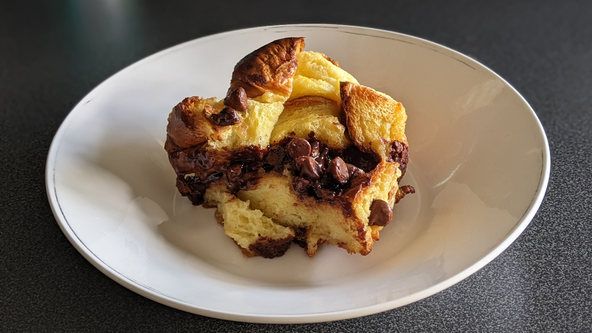
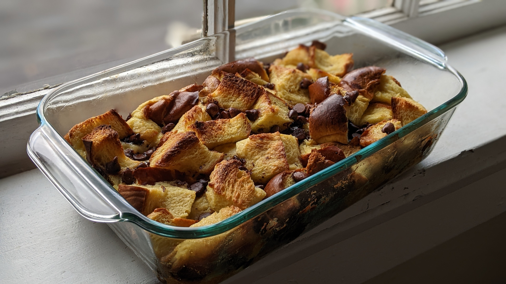

Bread Pudding

Author: Derek Nichols |
Cooked: July 17, 2022
Yields: 8 Servings | Prep Time: 10 Minutes | Cook Time: 35 Minutes
Ingredients
- 2 c. milk
- 2 Tbs unsalted butter
- 1 tsp vanilla extract
- 1/3 c. sugar
- Pinch of salt
- 4 eggs, beaten
- Loaf of sweet egg bread (we used challah)
- Optional mix-ins: Chocolate chips, chopped pecans, etc.
Directions
- In a small saucepan over low heat, warm butter, vanilla, sugar, and salt. Continue heating until the butter melts, and set aside to cool. Once cooled, add beaten eggs and whisk.
- Take a small 2-2.5 qt casserole dish, and butter the bottom and sides.
- Cut enough bread into 1"-2" cubes to fill the casserole dish (approximately 4-6 cups), and pour the egg mixture evenly over the bread.
- Optional: Add chocolate chips, chopped pecans, chopped granny smith, tablespoon whisky/bourbon, etc.
- Let sit for one hour or more. After, make sure that the top bread is evenly soaked.
- Heat oven to 350 degrees. Bake for 30-40 minutes or until custard is set but still a little wobbly and edges of bread have browned.

Additional Notes
- When we first made this, we used a 9" x 13" pan which was a huge mistake! This needs depth for the custard, and we were left with mostly a toasted top layer. The casserole dish is the only way to go.
- While this is great warm, I've been loving it cold.